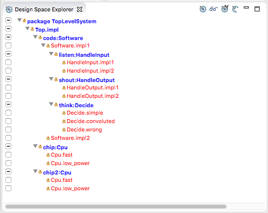
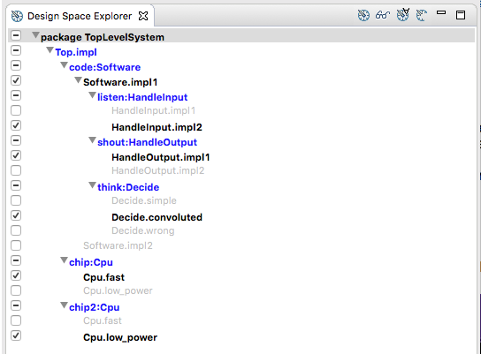

Once the Design Space Explorer view has been opened, the (top-level) system implementation must be chosen.
First the AADL source file (ending .aadl) containing the desired system implementation text must be opened. If you don't know which system implementation to use, then use OSATE to explore the AADL architecture models.
When you have the file opened in the OSATE editor, the outline will appear in the outline view which is customarily on the right hand side. Right-click on the name of the system implementation that will be the top-level of the design space to explore. This brings up a context-sensitive menu. Choose "Choose system implementation for design exploration".
The Design Space Explorer view will show a tree representing the design space of the selected system implementation.
The small triangle containing an exclamation point indicates there remain unchosen implementations in its subtree.
Check the box of the implementations in the design you want to analyze.
Click on the to create an instance model file for analysis. An .aaxl file will be created in the "instances" folder.
Also, a configuration file will be created in the "signature" folder of the "Configuration" project which can be used to re-create the instance model file.
Next: Read Signature File